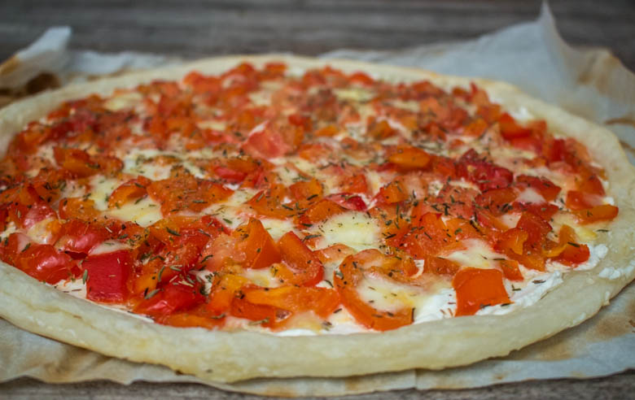
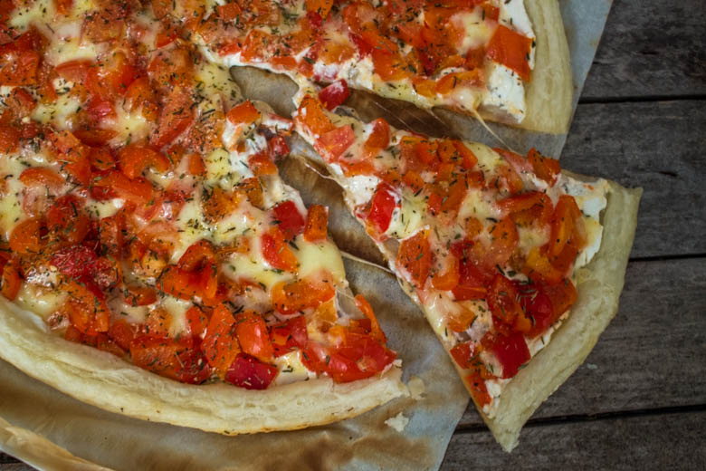
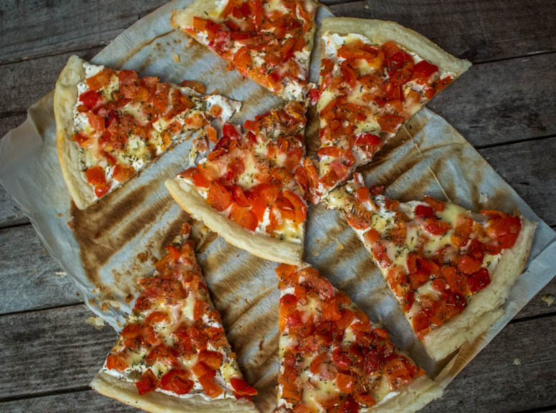

Tarte aux poivrons presque toute rouge

Aujourd’hui on se retrouve pour une recette toute simple mais vraiment délicieuse!
Depuis très longtemps j’avais envie de partager avec vous la recette de ma tarte aux poivrons! Dans cette tarte fine il y a des poivrons, des tomates, du thym, de la mozzarella et un peu de cream cheese! En écrivant ces quelques lignes je réalise qu’elle n’est pas forcement ultra « light » mais c’est pourtant l’impression que j’ai à chaque fois que je la réalise (et ça me donne bonne conscience^^).
C’est une recette que je réalise souvent quand je manque de temps pour cuisiner car elle est très simple et très rapide à réaliser! La bonne nouvelle est que mon chéri en raffole et la dévore toujours jusqu’à la dernière miette!
Vous pouvez accompagner cette tarte aux poivrons d’une bonne petite salade verte à côté et ce sera un dîner parfait! Je pense en effet que c’est une recette idéale si l’on se pose la question « qu’est ce qu’on mange ce soir? » En tout cas j’espère bien que ce sera la réponse que vous trouverez ici!
Alors place à la recette et bonne semaine à tous 🙂
Ingrédients
- Poivrons rouges - 2
- Tomates - 1
- Mozzarella - 1 boule
- Pâte feuilletée - 1
- Ail (facultatif) - 1 gousse
- Cream cheese
- Thym
Instructions
- Préchauffer le four à 220°
- Préparer les poivrons : Ôter le pédoncule et nettoyer l’intérieur (de façon rapide) A l’intérieur de chaque poivron, mettre du thym et une gousse d'ail
- Enfourner les poivrons pendant 15 à 20 minutes
- Laisser les poivrons refroidir
- Tartiner la pâte feuilletée de cream cheese
- Couper la tomate et la mozzarella en petits dés
- Éplucher les poivrons et couper les en petits morceaux
- Parsemer les 3 ingrédients sur la pâte
- Saupoudrer d'un peu de thym et d'une gousse d'ail écrasée
- Enfourner 20 minutes



Les tips de la communauté
Bonne réception générale avec commentaires positifs sur la présentation colorée de la tarte. Les lecteurs apprécient l'originalité de cette tarte aux poivrons.
Astuces
- Bien rôtir les poivrons avant de les intégrer pour plus de saveur
Variantes suggérées
- Ajouter d'autres légumes comme des oignons ou de l'ail
- Varier les fromages utilisés selon les préférences